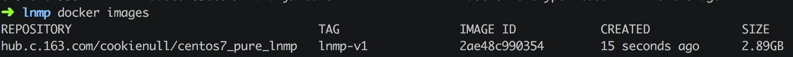

笔记--docker 常用命令
docker top determined_swanson 来查看容器内部运行的进程
docker inspect determined_swanson Docker 容器的配置和状态信息。
docker stop determined_swanson 停止容器
docker start determined_swanson 重启容器
docker rm determined_swanson 删除容器
docker images 列出镜像列表
REPOSITORY：表示镜像的仓库源
TAG：镜像的标签
IMAGE ID：镜像ID
CREATED：镜像创建时间
SIZE：镜像大小
docker run 从镜像创建一个容器
docker rmi xx 删除images
docker pull 下载镜像
docker search 查找镜像
docker commit : 容器创建一个新的镜像
持久化容器修改，把容器当前的状态转换为镜像
docker commit 把当前容器的状态变为images
docker commit -m="add lnmp " --author="lengthuo" bdb4303782f2 hub.c.163.com/cookienull/centos7_pure_lnmp:lnmp-v1

生成一个新的镜像
当然你可以创建自己的仓库
docker login
镜像推送到DockerHub
就像github一样的版本控制一样。自己的docker镜像也可以提交到DockerHub。
创建镜像
当我们从docker镜像仓库中下载的镜像不能满足我们的需求时，我们可以通过以下两种方式对镜像进行更改。
1.从已经创建的容器中更新镜像，并且提交这个镜像
2.使用 Dockerfile 指令来创建一个新的镜像
Docker 容器连接
网络端口映射
两种方式的区别是:
-P :是容器内部端口随机映射到主机的高端口。
-p : 是容器内部端口绑定到指定的主机端口。
docker port adoring_stonebraker 5002(容器中的端口)快捷地查看端口的绑定情况。
Docker容器连接
端口映射并不是唯一把 docker 连接到另一个容器的方法。
docker有一个连接系统允许将多个容器连接在一起，共享连接信息。
docker连接会创建一个父子关系，其中父容器可以看到子容器的信息。
容器命名
创建一个容器的时候，docker会自动对它进行命名。另外，我们也可以使用--name标识来命名容器，例如：
查看本机docker镜像 docker images
创建容器，只要是不停止，不rm就会一直在，只是没有开启，在容器中修改配置，然后去
docker run -d -p 8888:80 33066:3306 -v /Users/shuo/sites/w3c:/w3c hub.c.163.com/cookienull/centos7_pure_lnmp
docker run -d -p 8080:80 xxxxx
Docker stop 96 (删除容器之前一定要停止docker)
docker run -d -P xxxxx 随机一个端口
docker pull
docker run —help
docker run -d xxx 运行在后台，并打印出id
docker ps docker —-help 可以查看是列出容器的列表（正在运行的容器）
//进入容器中
Docker exec -it f4sasd123(容器的id) bash
-i输出有效 t 分配一个伪终端 bash 这个终端类型
-a Show all containers (default shows just running)
docker stop -f
-d 作为守护进程启动。
-p 8080:80 把容器里面的80作为本地8080端口映射
-v 挂在一个卷
-d 守护进程的方式去运行
-p 端口映射
-name 给他一个自定义的名字
-v 文件映射 本地目录：容器目录 （$PWD/index.html:/容器地址） 把当前目录先的index.html 映射到容器中区
docker run -d -p 8888:80 -p 3307:3306 --name centos_pure_lnmp -v /Users/shuo/sites/w3c:/w3c hub.c.163.com/cookienull/centos7_pure_lnmp（容器名称）
docker inspect（检查） nginx
会显示出容器的所有信息
docker images 查看镜像
docker run 镜像 从镜像创建一个容器
docker restart 重启
docker exec 启动这个容器
docker stop 停止这个容器
docker rm 删除这个容器（不停止的不能删除容器）